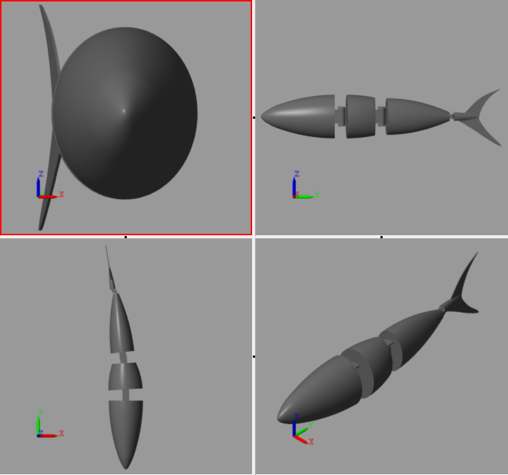
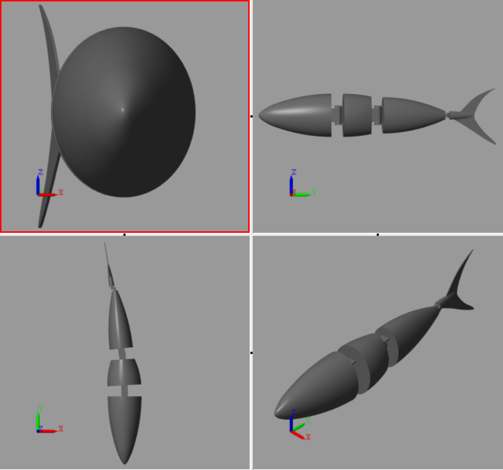

个人项目
水下机器人设计与仿真
这个项目旨在设计一个多关节的仿生水下机器人，通过Simulink进行运动仿真，确保其能在水中灵活运动，具备快速启动与停止的能力。
外部管道爬行器
设计并实现了一款能爬行在管道上的机器人，采用3D打印技术制作，并使用ESP32进行蓝牙远程控制。
你好，我是[你的名字]，一名机器人研究与开发爱好者。
我是一名机械工程与机器人领域的学生，致力于开发创新的水下机器人，结合鱼类和水母的生物启发式设计。
我的兴趣包括机器人控制、运动模拟与路径规划，我希望通过设计具有优异机动性的机器人，探索更多关于智能控制的应用。
我的未来目标是成为机器人领域的教授。
这个项目旨在设计一个多关节的仿生水下机器人，通过Simulink进行运动仿真，确保其能在水中灵活运动，具备快速启动与停止的能力。
设计并实现了一款能爬行在管道上的机器人，采用3D打印技术制作，并使用ESP32进行蓝牙远程控制。